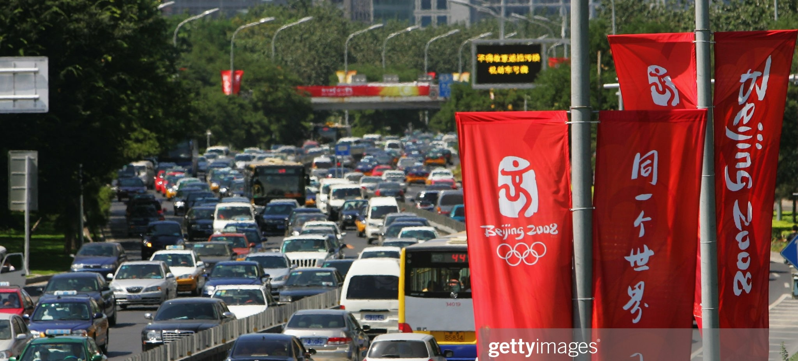
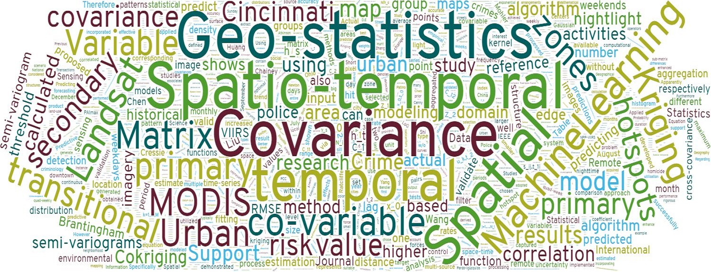
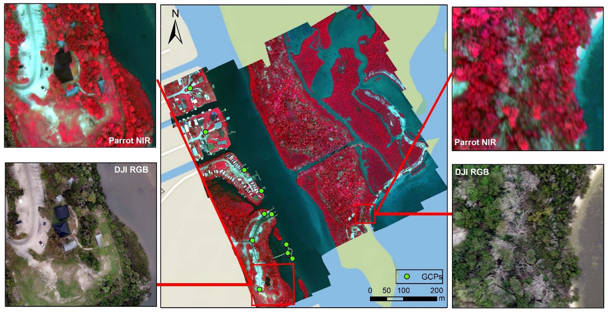
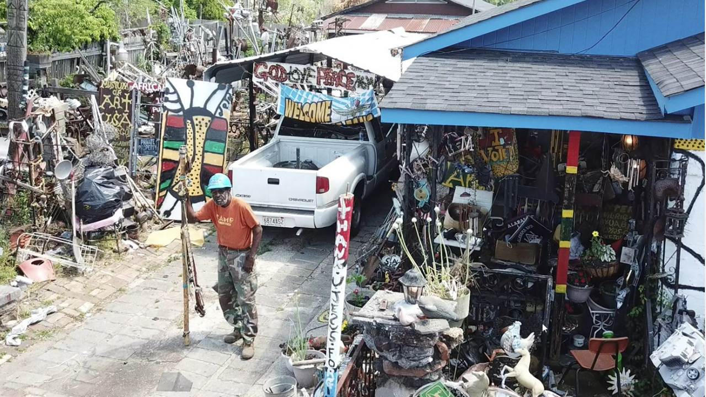
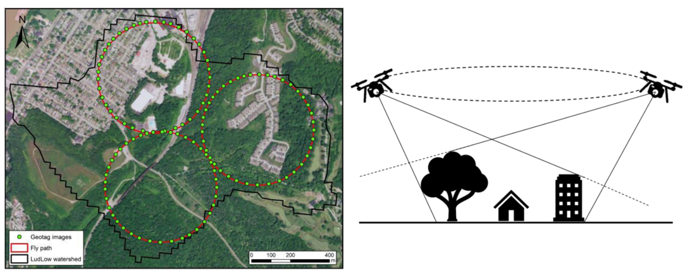
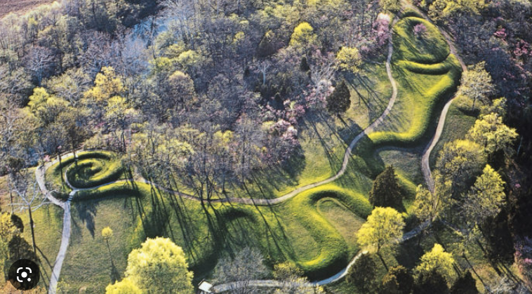

Urban-Environmental Data Science
Spatial statistics, machine learning, and remote sensing for urban heat, crime, and multi-source data fusion.

Urban Heat and Urban Transportation
We use thermal remote sensing and the urban heat budget to isolate and quantify the transportation impact on urban heat and climate change.
Read More →
Crime Prediction and Spatial Statistics
We develop a novel geostatistical technique to integrate historical crime data and urban transitional zones identified from VIIRS nightlight imagery for more accurate crime prediction.
Codes →ST-Cokriging and Image Fusion/Assimilation
We develop a spatio-temporal Cokriging method for assimilating multi-sensor remote sensing data, optimally determining parameters by accounting for spatio-temporal covariance, filling data gaps, and providing quantitative uncertainty estimates.
Read More →
Drone Mapping the Florida Coastal
Field trials over the Indian River Lagoon used multispectral UAV mapping with GCPs, compared to geo-referenced satellite imagery. NDVI and object-oriented classification methods were employed to compare UAV and satellite mapping capabilities.
Read More →
Mapping Joe Minter’s African American Village
Advanced technology documents and preserves artist Joe Minter’s art installation in Birmingham, Alabama, creating a digital rendering accessible to a wider audience.
Drone Visualization Video →
Drone for Hydrological BMP Management
High-resolution drone imagery provides better surface and elevation data for Best Management Practices analysis, improving watershed outlines and cost-effectiveness estimates under future climate scenarios.
Read More →
Drone Mapping the OH Serpent Mound
Drone mapping captures a bird's-eye view of the Serpent Mound, an ancient archaeological site in Ohio, revealing its structure and potential ceremonial alignments with astronomical events.
View Data →